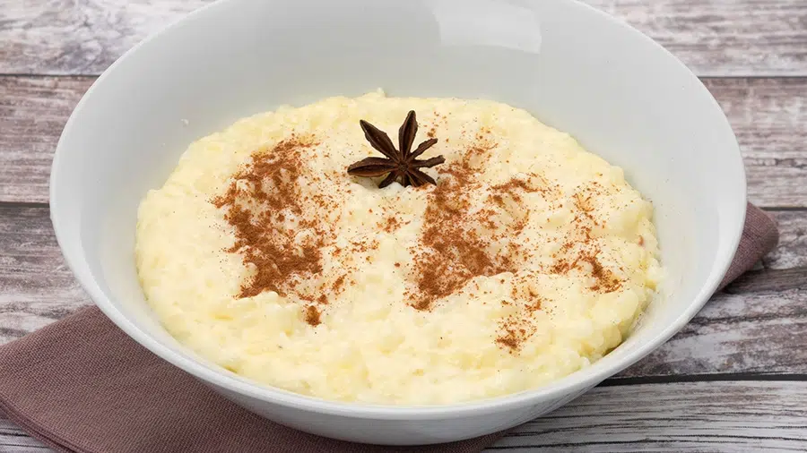

Description
Rice cereal is one of the simplest, most easily digestible foods out there. It's what babies eat, after all! But mix some isolate protein into a bowl of it, and you've got a solid serving of carbs and protein fit for grown-up gains.
Ingredients
- Cream of rice
- Protein Powder
- Water
Steps
- In a pot, bring 1 cup of water to a boil.
- Slowly add rice cereal and stir until blended well.
- Reduce heat to low and leave rice uncovered to simmer for 30 seconds, stirring constantly to reach desired consistency. Remove from heat and let stand for 1 minute.
- Place protein powder in a large bowl. Pour rice cereal over protein and stir until smooth.